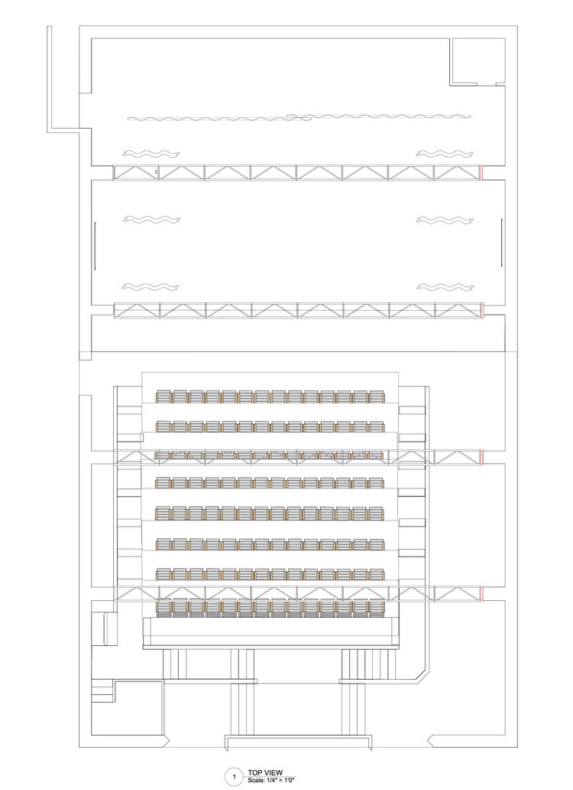
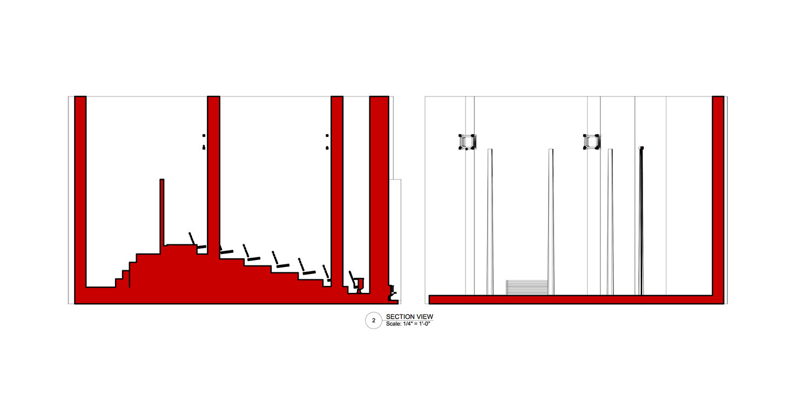
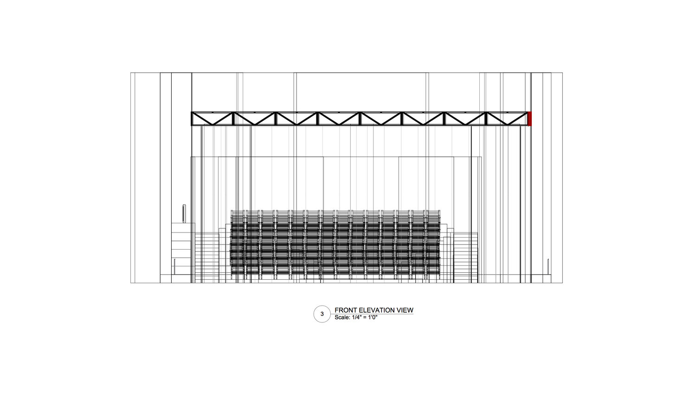

Work
N.J.N Logo
Welcome to the Theater
Pencil Drawings
Lizrd Concept Design
Zen Pavilion
Photography
JESSICA NOSAL
About
Welcome to the Theater
Since I love plays and musicals, I decided to recreate a theater that was designed in an abandoned church.All designs are in 1/4 inch scale.



❮
❯